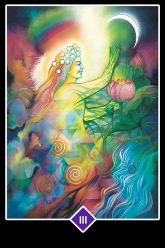
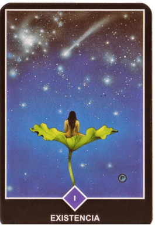
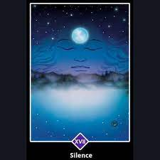
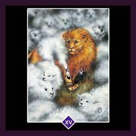

MEDITACIÓN, LA PRIMERA Y LA ÚLTIMA LIBERTAD.

"La meditación es ser TESTIGO.
La meditación comienza por separarse de la mente, por ser un testigo. Ésta es la única manera de separarse de algo. Si estás mirando hacia la luz, naturalmente, una cosa es segura: tú no eres la luz; eres quien está mirando la luz. Si estás observando las flores, una cosa es segura: tú no eres la flor; eres el observador.
La contemplación es la clave de la meditación. Contempla tu mente. No hagas nada: ni repetir un mantra, ni repetir el nombre de Dios. Sólo observa lo que la mente hace. No la perturbes, no la obstaculices, no la reprimas; no emprendas nada por tu parte. Limítate a ser un observador. Y el milagro de la contemplación es la meditación. A medida que observes, lenta, lentamente, la mente se vaciará de pensamientos. Pero no te estás quedando dormido; estás cada vez más alerta, más consciente.
Cuando la mente se vacía por completo, toda tu energía se transforma en una llama de despertar. Esta llama es el resultado de la meditación. Así que puedes decir que la meditación es otro nombre de la contemplación, del ser testigo, de la observación, sin emitir juicio ni evaluación alguna. Sólo por medio de la contemplación, saldrás de inmediato de la mente..."
Osho.
cartas del Osho Zen Tarot
| Nombre | Descripción | Imagen |
|---|---|---|
| Creatividad | En la carta de La Creatividad se nos muestra a una joven poseída por toda la intensidad de la fuerza creativa, es una entrada a todo aquello que queremos entender, manifestado por la técnica, la adquisición de experiencia y finalmente el conocimiento. significado de La Creatividad en el tarot OshoCuando esta carta aparece en una lectura de tarot nos esté enviando una invitación al descubrimiento, a la implicación en la búsqueda del conocimiento de una manera libre y sin ataduras. Lo que aprendemos por nosotros mismos jamás se olvida. |  |
| El loco | Representa al hombre libre que pasa página y emprende su andadura en busca de nuevas experiencias y ligero de equipaje. Es alguien que confía en sí mismo y en sus creencias, y que confía en los demás. Se guía por su intuición y en sus impulsos. Está abierto a cualquier experiencia, que pueda ser interesante sin pensar, que algo vaya a salir mal. Es siempre positivo, no tiene maldad y cree que lo buena está por venir. |  |
| Existencia | Cada uno de nosotros estamos desnudos ante el mundo. Nuestro hogar es la relajación y la aceptación interior y está en nosotros mismos. Y la felicidad la tenemos, que encontrar en nuestro interior, estemos donde estemos. El mensaje de La Existencia es que el mundo nos necesita, porque formamos parte de un todo. El Universo sabe que sin nosotros no está completo. Esto nos da seguridad. |  |
| El rayo | Es un símbolo de destrucción. Lo cual siempre es trágico pero no necesariamente negativo a largo plazo. La destrucción es un símbolo de desapego, una forma de liberarse de lo que nos rodea para encontrarnos a nosotros mismos. Cuando se muestra esta carta el significado de el rayo en una consulta de tarot online no deja mucho lugar a dudas, hay que prepararse para un golpe. |  |
| Silencio | Cuando aparece en una lectura de tarot, el significado de El Silencio en una lectura de tarot Osho, es una llamada a la reflexión. A buscar un momento tranquilo, sin interrupciones y dedicarlo a meditar sobre nuestra vida, lo que queremos hacer y lo que somos. |  |
| Condicionamiento | Esta carta del Tarot Osho nos muestra un león rodeado de corderos, vestido como uno de ellos. Siempre que aparece en una lectura de tarot, se recuerda una antigua fábula zen sobre un león que fué criado por una oveja, dentro del rebaño y siempre pensó que era una de ellas hasta que un viejo león lo capturó, lo llevó a un pozo y le obligó a observar su propia imagen reflejada por el agua. |  |